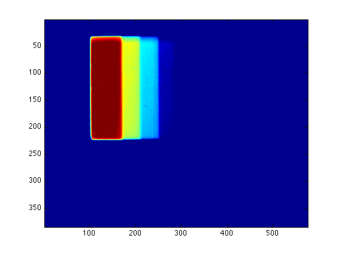

Plotting FITS images
Assume that you already copied the .m files img2fits.m and rfits.m in your current directory, and you have the sample.img file in the directory images/.
Contents
Change the file format
The first step is to change the .img files (a special format valid only for this camera) into .fits files (FITS is a standard astronomical format). This can be done by simply calling the function img2fits:
img2fits('images/sample.IMG');
You will find a new file with the name sample.fits in the directory images/.
Read the FITS file
Now read in the images by using the rfits procedure:
s = rfits('images/sample.fits');
What's inside?
The MATLAB command whos will show you a list of all variables you currently have, including there names and types:
whos
Name Size Bytes Class Attributes s 1x1 1779408 struct
As you can see here, the variable s is a complex data structure. Now type the variale name s will give you what variables are inside this structure:
s
s =
naxis: 2
bitpix: -32
numpt: [384 576]
crval: [2x1 double]
crpix: [2x1 double]
cdelt: [2x1 double]
crota: [2x1 double]
ctype: {2x1 cell}
cunit: {2x1 cell}
bscale: 1
bzero: 0
bunit: ''
blank: NaN
x: {[1x384 double] [1x576 double]}
data: [384x576 double]
So now we know s contains naxis, bitpix, numpt, crval, and so on. We also know that, for example, naxis is number 2, and crval is a vector with 2 elements which are the type double (means they are double-precision floating-point numbers). These components of s provide the header information of this CCD map.
You can type s.variables to see what's inside the sub-variables:
s.naxis
ans =
2
s.crval
ans =
1
1
Now, the last variable inside s is data, which is an 384 x 576 numerical (note the type double) array. This is what we need in this lab.
Plot the data
Now you have s.data as a data array. To visualize, you may type
imagesc(s.data)
(Do you remember how to add a colorbar?)
You can also change the color map by using colormap, e.g.,
colormap gray
The default color map is jet. Try
colormap jet
or
colormap default
to recover it.
Setting the display range
The default pseudocolor axis scaling is autoranging, but you can set the values corresponding to the extremes of the color range using caxis([min max]):
caxis([5000 10000])
Properly choosing your [min max] values can help you see all detail that is in your data!